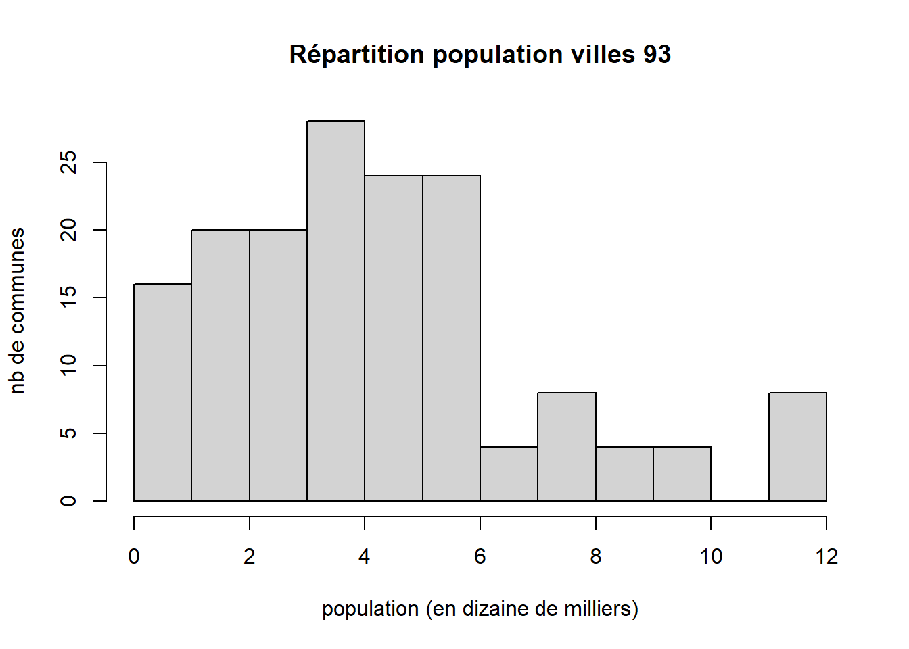
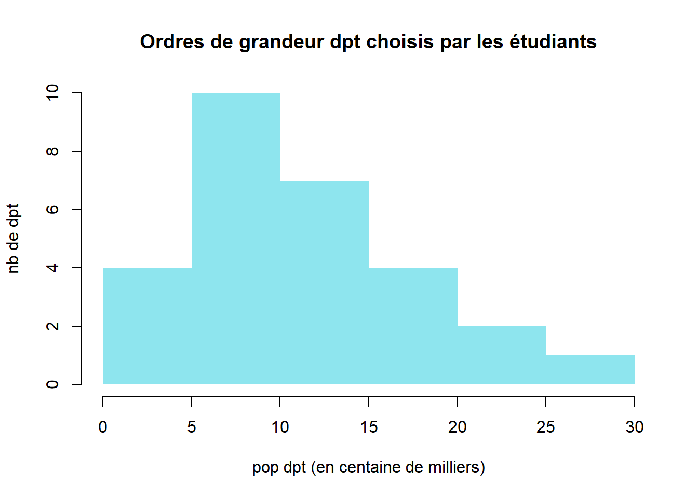
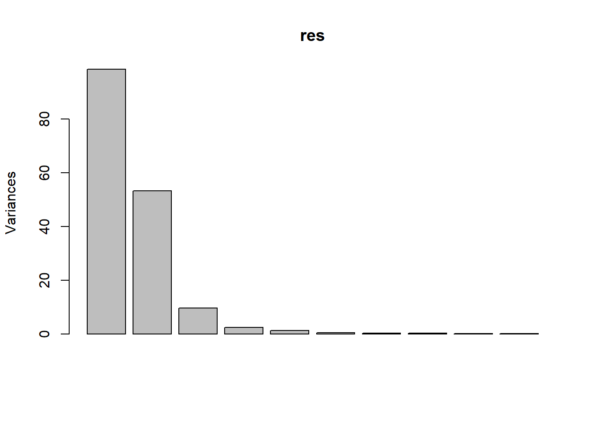
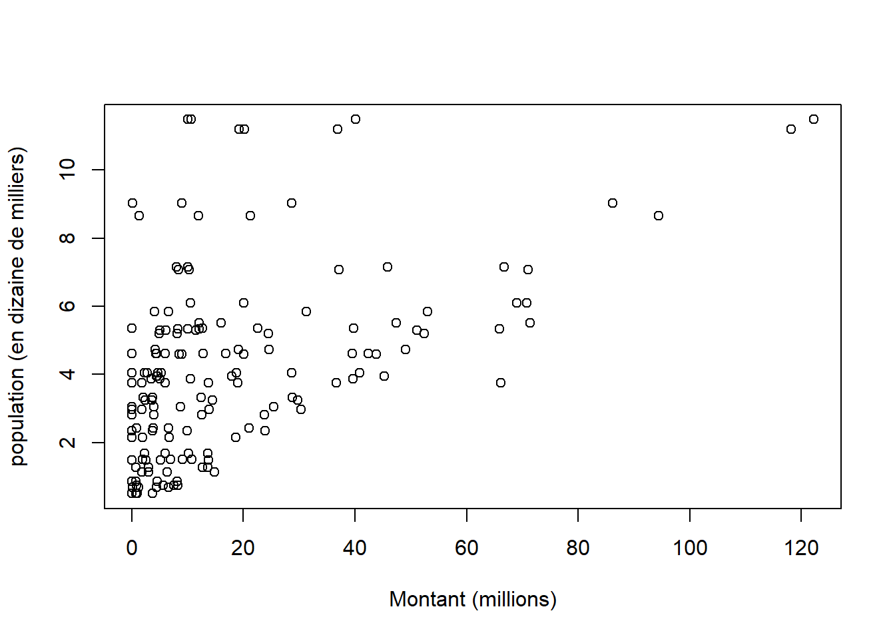
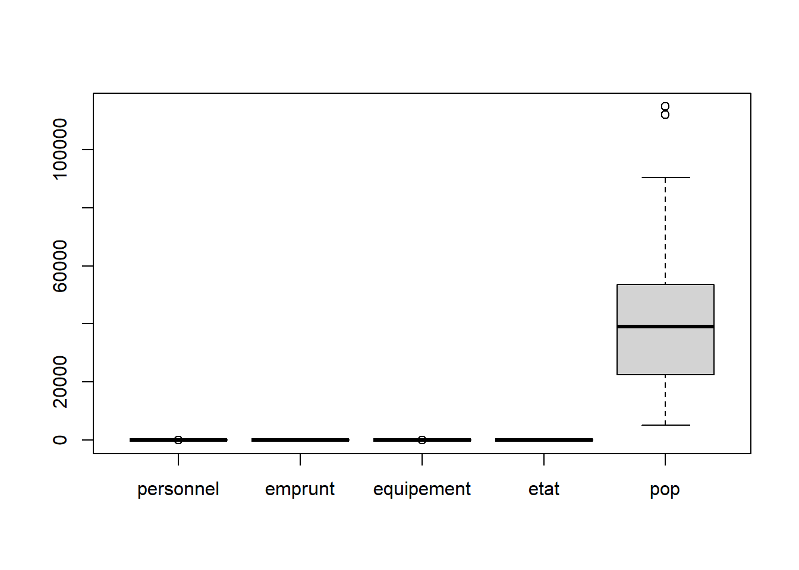
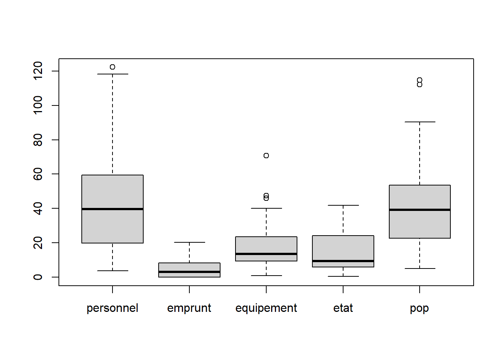
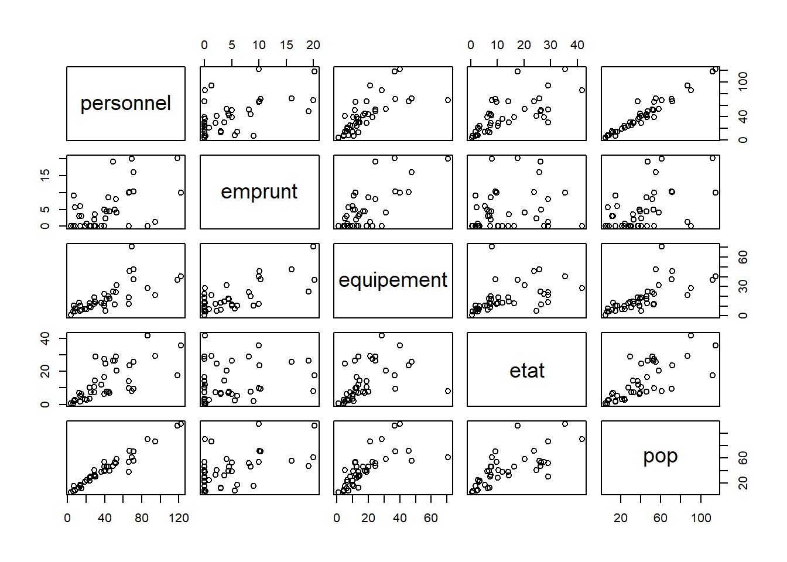
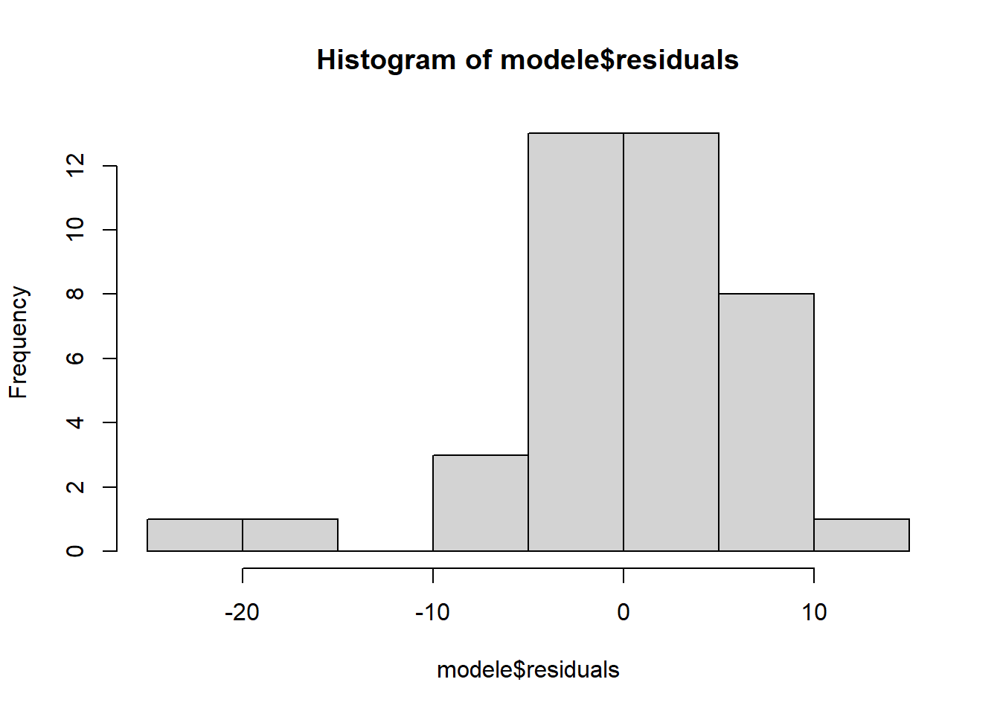
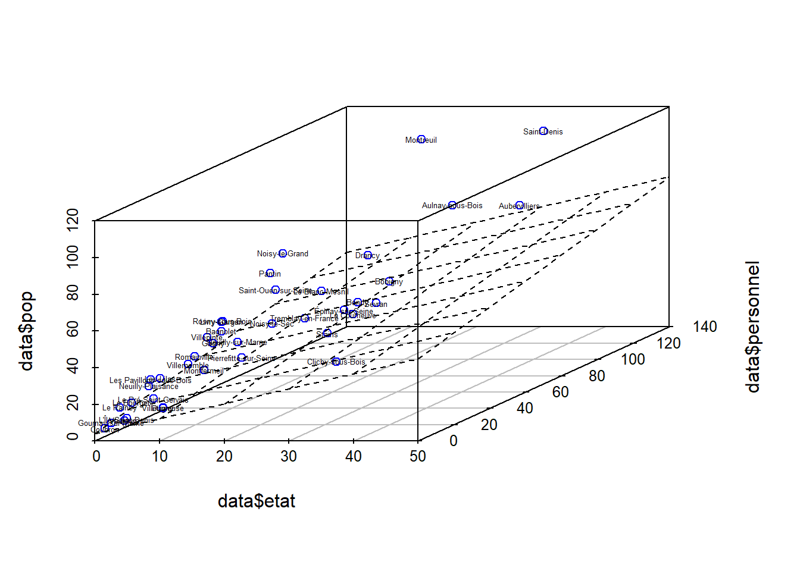
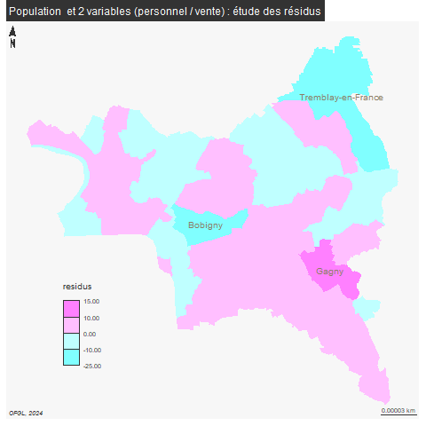

Multivariées : démarche explicative
La régression multiple est une démarche explicative.
1 Préparation de la donnée
Il s’agit de réfléchir à de nombreux X pour expliquer un seul Y
Dans notre exemple, nous reprenons comme
facteur à expliquer (Y) = la population d’une ville (que nous assimilons à la taille d’une ville)
facteurs explicatifs (X) = les frais de personnel, les dépenses d’équipement, les emprunts, et les ventes de biens et service
Le choix des variables est très important, il ne faut pas qu’elles soient corrélées entre elles, ce qui, sur nos données, est assez difficile puisqu’il s’agit de comptes équilibrés.
… Mais avoir une situation où une seule variable est expliquée par plusieurs autres reste une gageure.
exemples utilisés dans l’ouvrage de référence, le chadule :
précipitation par longitude et latitude
vote pour LE PEN et étrangers, délinquants, chômeurs, population urbaine
## [1] "Exercice"
## [2] "Outre.mer"
## [3] "Code.Insee.2024.Région"
## [4] "Nom.2024.Région"
## [5] "Code.Insee.2024.Département"
## [6] "Nom.2024.Département"
## [7] "Code.Siren.2024.EPCI"
## [8] "Nom.2024.EPCI"
## [9] "Strate.population.2024"
## [10] "Commune.rurale"
## [11] "Commune.de.montagne"
## [12] "Commune.touristique"
## [13] "Tranche.revenu.par.habitant"
## [14] "Présence.QPV"
## [15] "Code.Insee.2024.Commune"
## [16] "Nom.2024.Commune"
## [17] "Catégorie"
## [18] "Code.Siren.Collectivité"
## [19] "Code.Insee.Collectivité"
## [20] "Siret.Budget"
## [21] "Libellé.Budget"
## [22] "Type.de.budget"
## [23] "Nomenclature"
## [24] "Agrégat"
## [25] "Montant"
## [26] "Montant.en.millions"
## [27] "Population.totale"
## [28] "Montant.en...par.habitant"
## [29] "Compte.2024.Disponible"
## [30] "code_type_budget"
## [31] "ordre_analyse1_section1"
## [32] "ordre_analyse1_section2"
## [33] "ordre_analyse1_section3"
## [34] "ordre_analyse2_section1"
## [35] "ordre_analyse2_section2"
## [36] "ordre_analyse2_section3"
## [37] "ordre_analyse3_section1"
## [38] "ordre_analyse3_section2"
## [39] "ordre_analyse3_section3"
## [40] "ordre_analyse4_section1"
## [41] "annee_join"
## [42] "Population.totale.du.dernier.exercice"## [1] "Population.totale" "Nom.2024.Commune"
## [3] "Agrégat" "Montant"
## [5] "Montant.en.millions" "Montant.en...par.habitant"names(data) <- c("pop", "commune", "agregat", "montant", "montantM", "montantTX")
table(data$agregat)##
## Dépenses d'équipement Emprunts hors GAD
## 40 40
## Frais de personnel Ventes de biens et services
## 40 401.1 Exercice de cours
Utiliser l’aide F1 pour voir les options utiles de read.csv2
Analyse des réponses données par les étudiants :
on retrouve :
- dec, sep, fileEncoding (peu utilisé avec les données de l’Ofgl)
mais aussi :
- header, FileEncoding, row.names, skip
Un exemple pour le row.names
## code departement region commune plm epci
## Marseille 8e Arrondissement 13208 13 93 13055 NA NA
## La Rochelle 17300 17 75 NA NA 241700434
## Plouhinec 29197 29 53 NA NA 242900629
## Bordeaux 33063 33 75 NA NA 243300316
## Montpellier 34172 34 76 NA NA 243400017
## Nantes 44109 44 52 NA NA 244400404Attention
- getwd(), names() sont des fonctions et non des paramètres
2 Transformation du tableau
Il s’agit d’abord de simplifier les chiffres, puis de faire un choix sur le montant et enfin d’éclater les agrégats pour obtenir une colonne pour chaque agrégat.
Le travail sur la préparation du tableau est donc essentiel et représente une grosse partie de l’étude.
2.1 Simplifier les chiffres
Concernant la population de la ville, l’ordre de grandeurs se voit au travers de l’histogramme

Afin d’avoir des chiffres plus faciles à appréhender, on raisonne en dizaine de milliers pour la population.
Mais, il ne faudra pas oublier de le rappeler à chaque graphique.
data$pop <- data$pop/10000
hist(data$pop, main = "Répartition population villes 93", xlab = "population (en dizaine de milliers)", ylab = "nb de communes")
Remarque : ordres de grandeur pour les données étudiants
dataEtudiant <- read.csv("data/communeEtudiant.csv")
dpt <- unique(dataEtudiant$departement)
# 28 dpt choisis
# on récupère la donnée sur statistiques locale de la population par dpt
pop <- read.csv2("data/popDep.csv", na.strings = "N/A - résultat non disponible")
# attention au pb du NA
pop <- pop [pop$Code %in% dpt,]
# 28 dpt avec pop
hist(pop$Population.municipale.2022, col = "cadetblue2", border = NA, main = "Ordres de grandeur dpt choisis par les étudiants", xlab = "pop dpt", ylab= "nb de dpt")
hist(pop$Population.municipale.2022/100000, col = "cadetblue2", border = NA, main = "Ordres de grandeur dpt choisis par les étudiants", xlab = "pop dpt (en centaine de milliers)", ylab= "nb de dpt")
Cependant, dans les réponses étudiant à la question de l’ordre de grandeur de 10 000 et inférieurs.
2 exercices à faire :
- comment utiliser l’aide F1 pour trouver les options nécessaires pour présenter le graphique
Remarquer notamment : main (titre), xlab (titre axe X), ylab (titre axe Y)
- quelle est l’analyse de ce graphique ?
Il y a quelques très petites villes et grosses villes mais la majorité des villes sont entre 500 000 et 1,5 million.
## commune popArr
## 8 Le Bourget 1
## 10 Coubron 1
## 13 Dugny 1
## 16 Gournay-sur-Marne 1
## 17 L'Île-Saint-Denis 1
## 37 Vaujours 1
## 40 Villetaneuse 1
## 1 Le Raincy 2
## 18 Les Lilas 2
## 22 Neuilly-Plaisance 2
## 27 Les Pavillons-sous-Bois 2
## 29 Le Pré-Saint-Gervais 2
## 9 Clichy-sous-Bois 3
## 20 Montfermeil 3
## 28 Pierrefitte-sur-Seine 3
## 30 Romainville 3
## 38 Villemomble 3
## 4 Bagnolet 4
## 15 Gagny 4
## 23 Neuilly-sur-Marne 4
## 35 Stains 4
## 36 Tremblay-en-France 4
## 39 Villepinte 4
## 7 Bondy 5
## 11 La Courneuve 5
## 14 Épinay-sur-Seine 5
## 19 Livry-Gargan 5
## 25 Noisy-le-Sec 5
## 31 Rosny-sous-Bois 5
## 33 Saint-Ouen-sur-Seine 5
## 34 Sevran 5
## 5 Le Blanc-Mesnil 6
## 6 Bobigny 6
## 26 Pantin 6
## 12 Drancy 7
## 24 Noisy-le-Grand 7
## 2 Aubervilliers 9
## 3 Aulnay-sous-Bois 9
## 21 Montreuil 11
## 32 Saint-Denis 11exercice :
- A quoi servent les fonctions round, unique et order ?
réponse :
Les fonctions servent à arrondir les chiffres, à supprimer les doublons et à classer par ordre croissant
L’option qui permet de classer en ordre décroissant est decreasing=TRUE (consulter l’aide F1 pour le voir)
2.2 Montant relatif ou montant absolu ?
On choisit d’utiliser le montant en millions puisque le but de l’exercice est d’avoir des variables indépendantes.
plot(data$montantTX, data$pop, xlab = "Montant / hbt", ylab = "population (en dizaine de milliers)", main = "Utilisation du montant par habitant")
plot(data$montantM, data$pop, xlab = "Montant (millions)", ylab = "population (en dizaine de milliers)")
exercice : que permettent de voir ces deux graphiques ?
La relation entre montant en millions et population est plus claire que celle existant entre montant par hbt et population.
2.3 Constitution de la base
Les agregats sont sur une seule colonne, il faut créer une colonne par agrégat.
Sous le tableur, on ferait des copier-coller, ou du tcd.
Sous R, on utilise une jointure : pour chaque commune, donne moi l’élément correspondant de l’agrégat.
On répète l’opération dans une boucle afin d’aller plus vite
varX <- names(table(data$agregat))
fin <- unique(data [, c("commune","pop")])
# A chaque variable
for (v in varX){
# définir une table temporaire uniquement pour la variable choisie
tmp <- data [data$agregat==v, c("commune","montantM")]
# nommer les sommes sélectionnées du nom de la variable
names(tmp) [2] <- v
jointure <- merge(tmp, fin, by = "commune")
# Récupérer le tableau pour le tableau final
fin <- jointure
}
fin## commune Ventes de biens et services Frais de personnel
## 1 Aubervilliers 8.9228405 86.236467
## 2 Aulnay-sous-Bois 11.9691717 94.396357
## 3 Bagnolet 4.6064931 45.236020
## 4 Bobigny 12.0265003 71.441528
## 5 Bondy 6.1274727 51.139710
## 6 Clichy-sous-Bois 1.7937063 30.313204
## 7 Coubron 0.7738234 3.766051
## 8 Drancy 8.0470636 66.687769
## 9 Dugny 1.8270763 14.863789
## 10 Épinay-sur-Seine 12.6768508 39.763408
## 11 Gagny 4.6104758 28.703506
## 12 Gournay-sur-Marne 1.1771376 6.522258
## 13 L'Île-Saint-Denis 0.7544961 8.163406
## 14 La Courneuve 4.1433418 49.129270
## 15 Le Blanc-Mesnil 6.5612345 53.009714
## 16 Le Bourget 2.4612093 13.698564
## 17 Le Pré-Saint-Gervais 2.2361624 13.561433
## 18 Le Raincy 1.9166571 6.915650
## 19 Les Lilas 3.7168543 23.915165
## 20 Les Pavillons-sous-Bois 3.7768510 21.010550
## 21 Livry-Gargan 5.9870905 42.423546
## 22 Montfermeil 3.9261878 23.826664
## 23 Montreuil 19.1979326 118.192094
## 24 Neuilly-Plaisance 1.9709155 18.604557
## 25 Neuilly-sur-Marne 6.0341243 36.607950
## 26 Noisy-le-Grand 8.3559602 71.039603
## 27 Noisy-le-Sec 4.3098360 39.542428
## 28 Pantin 10.5048853 69.048952
## 29 Pierrefitte-sur-Seine 2.4350343 29.715994
## 30 Romainville 3.6535006 28.813713
## 31 Rosny-sous-Bois 8.9384096 43.836852
## 32 Saint-Denis 10.6568135 122.243110
## 33 Saint-Ouen-sur-Seine 8.2874672 65.876650
## 34 Sevran 4.9227444 52.446312
## 35 Stains 2.7152158 40.893240
## 36 Tremblay-en-France 1.7665785 66.165513
## 37 Vaujours 0.8271320 8.238368
## 38 Villemomble 3.9437663 25.401980
## 39 Villepinte 3.4261414 39.625092
## 40 Villetaneuse 0.7323518 12.643168
## Emprunts hors GAD Dépenses d'équipement pop
## 1 0.07647707 28.6853939 9.0259
## 2 1.27871516 21.2158920 8.6522
## 3 4.40000000 17.8599668 3.9493
## 4 16.05282400 47.4206893 5.5191
## 5 5.00000000 11.4227399 5.3067
## 6 0.00000000 13.8337652 2.9806
## 7 0.00000000 0.9604328 0.5107
## 8 10.05257767 45.8540526 7.1619
## 9 3.00000000 6.2887212 1.1368
## 10 0.00365172 22.5678405 5.3637
## 11 0.00161122 18.8102274 4.0428
## 12 0.14400000 4.3967305 0.6944
## 13 0.00000000 4.5391595 0.8683
## 14 19.12000000 24.6135973 4.7289
## 15 4.02764734 31.2765003 5.8396
## 16 0.00000000 5.1390625 1.4870
## 17 6.00000000 10.1837253 1.6913
## 18 9.02906600 10.7144856 1.5066
## 19 0.00000000 9.9339060 2.3589
## 20 0.80100464 6.5950731 2.4268
## 21 4.44760000 16.8634107 4.6218
## 22 0.00000000 12.5559629 2.8100
## 23 20.22605000 36.9540543 11.2027
## 24 0.00418922 6.7367279 2.1538
## 25 0.03167642 13.6931940 3.7639
## 26 10.26346136 37.1407308 7.0774
## 27 0.00000000 12.7376607 4.6229
## 28 20.03155790 70.7883303 6.0959
## 29 3.59982000 14.4685712 3.2426
## 30 2.00035000 12.4528229 3.3343
## 31 8.49247800 20.0538744 4.5857
## 32 10.00305177 40.1741108 11.4782
## 33 10.00010000 12.0828739 5.3320
## 34 8.10000000 24.4513183 5.2002
## 35 2.25000000 5.2806840 4.0443
## 36 0.00831823 19.0469101 3.7464
## 37 5.60000000 7.5097479 0.7549
## 38 0.01627696 8.6810302 3.0514
## 39 5.00140500 10.5189276 3.8798
## 40 3.00117976 13.5816948 1.2752## [1] "Ventes de biens et services" "Frais de personnel"
## [3] "Emprunts hors GAD" "Dépenses d'équipement"Enregistrement du tableau de données mis en forme
Dans l’exercice moodle, à la question “A quoi sert une boucle”, un étudiant a répondu
à concevoir la base de données et à avoir une colonne par agrégat avec ses valeurs
Ce qui correspond à la réponse précise sur la boucle
2.4 Base pour les étudiants
Afin de fournir une donnée propre pour le multivarié, voici l’extraction pour les 28 dpt recensés.
data <- read.csv2("data/gros/baseEtudiantMultivarie.csv", dec = ".")
dpt <- read.csv("data/communeEtudiant.csv")
dpt <- unique(dpt$departement)
# filtre colonne
data <- data [, c(5,27,16, 24,26)]
names(data)## [1] "Code.Insee.2024.Département" "Population.totale"
## [3] "Nom.2024.Commune" "Agrégat"
## [5] "Montant.en.millions"##
## Concours de l'Etat Dépenses d'équipement Emprunts hors GAD
## 34908 34908 34908
## Frais de personnel
## 34908##
## 01 02 03 04 05 06 07 08 09 10 11 12 13 14 15 16
## 1568 3156 1264 792 648 652 1340 1792 1304 1724 1732 1140 472 2108 984 1448
## 17 18 19 21 22 23 24 25 26 27 28 29 2A 2B 30 31
## 1852 1140 1108 2792 1392 1024 2012 2276 1448 2340 1460 1104 496 944 1404 2344
## 32 33 34 35 36 37 38 39 40 41 42 43 44 45 46 47
## 1844 2140 1368 1328 964 1088 2048 1976 1304 1068 1292 1028 828 1300 1252 1276
## 48 49 50 51 52 53 54 55 56 57 58 59 60 61 62 63
## 608 704 1780 2444 1704 960 2364 1996 996 2892 1236 2592 2716 1540 3556 1856
## 64 65 66 67 68 69 70 71 72 73 74 75 76 77 78 79
## 2180 1876 904 2056 1464 1064 2156 2256 1416 1088 1116 4 2828 2028 1036 1024
## 80 81 82 83 84 85 86 87 88 89 90 91 92 93 94 95
## 3084 1256 780 612 604 1016 1060 780 2024 1692 404 776 144 160 188 732
## 971 972 973 974 976
## 128 136 88 96 68## [1] 28On a les données pour 28 dpts
Puis on relance la boucle (avec quelques modifications)
varX <- names(table(data$agregat))
fin <- unique(data [, c("dpt","commune","pop")])
# A chaque variable
for (v in varX){
# définir une table temporaire uniquement pour la variable choisie
tmp <- data [data$agregat==v, c("dpt","commune","montant")]
# nommer les sommes sélectionnées du nom de la variable
names(tmp) [3] <- v
jointure <- merge(tmp, fin, by = c("dpt","commune"))
# Récupérer le tableau pour le tableau final
fin <- jointure
}
head(fin,5)## dpt commune Frais de personnel Emprunts hors GAD
## 1 13 Aix-en-Provence 119.75129 15.0
## 2 13 Allauch 18.63726 0.0
## 3 13 Alleins 1.34797 0.5
## 4 13 Arles 56.15431 3.0
## 5 13 Aubagne 45.09675 8.0
## Dépenses d'équipement Concours de l'Etat pop
## 1 56.1587902 13.6326763 150641
## 2 8.6785402 2.9560111 21717
## 3 0.8096122 0.1667214 2833
## 4 19.0449456 12.1349166 51121
## 5 11.5732716 5.1952482 47747## [1] "Frais de personnel" "Emprunts hors GAD" "Dépenses d'équipement"
## [4] "Concours de l'Etat"# simplification des noms
names(fin) [3:6] <- c("personnel", "emprunt", "equipement", "etat")
write.csv(fin,"data/baseMultivarieSel.csv", row.names = F)On avait au départ 33 000 enregistrements, à la fin, après le traitement, il ne reste plus “que” 8253 observations.
3 Modèle de régression multiple
On utilise la base faite ci-dessus et on sélectionne son département.
3.1 Préparation de la donnée
## dpt commune personnel emprunt equipement etat pop
## 7918 93 Aubervilliers 86.23647 0.07647707 28.68539 41.759990 90259
## 7919 93 Aulnay-sous-Bois 94.39636 1.27871516 21.21589 29.077736 86522
## 7920 93 Bagnolet 45.23602 4.40000000 17.85997 7.012409 39493
## 7921 93 Bobigny 71.44153 16.05282400 47.42069 25.699245 55191
## 7922 93 Bondy 51.13971 5.00000000 11.42274 26.481537 53067# on place les noms des communes comme étiquette
rownames(data) <- data$commune
# on supprime les 2 premières colonnes
data <- data [, -c(1,2)]
head(data,5)## personnel emprunt equipement etat pop
## Aubervilliers 86.23647 0.07647707 28.68539 41.759990 90259
## Aulnay-sous-Bois 94.39636 1.27871516 21.21589 29.077736 86522
## Bagnolet 45.23602 4.40000000 17.85997 7.012409 39493
## Bobigny 71.44153 16.05282400 47.42069 25.699245 55191
## Bondy 51.13971 5.00000000 11.42274 26.481537 53067On obtient ainsi un tableau dont les étiquettes sont intégrées dans l’entête des lignes et qui ne contient que des chiffres.
## personnel emprunt equipement etat
## Min. : 3.766 Min. : 0.000000 Min. : 0.9604 Min. : 0.5018
## 1st Qu.: 20.409 1st Qu.: 0.007286 1st Qu.: 9.6207 1st Qu.: 6.0715
## Median : 39.584 Median : 3.000590 Median :13.6374 Median : 9.4962
## Mean : 42.091 Mean : 4.801627 Mean :18.4521 Mean :13.5642
## 3rd Qu.: 56.226 3rd Qu.: 8.198120 3rd Qu.:23.0387 3rd Qu.:23.9559
## Max. :122.243 Max. :20.226050 Max. :70.7883 Max. :41.7600
## pop
## Min. : 5107
## 1st Qu.: 23076
## Median : 39146
## Mean : 41881
## 3rd Qu.: 53399
## Max. :1147823.2 Coefficient de correlation / détermination
3.2.1 Quelques rappels et quelques calculs
Pour mémoire, la variance = moyenne du carré des écarts à la moyenne
covariance = moyenne du produit des écarts (combien deux variables varient l’une avec l’autre)
varPerso <- var(data$personnel)
varEmprunt <- var(data$emprunt)
# affichage scientifique ou pas
options( "scipen"=-100)
options("scipen"= 100)
boxplot(data)

## [1] 861.028## [1] 34.67135# calcul des écarts à la moyenne (différence et non pas distance)
prodEcart <- (data$personnel-mean(data$personnel))*(data$emprunt-mean(data$emprunt))
moyProEcart <- mean(prodEcart)
covarFormule <- cov(data$personnel,data$emprunt)
moyProEcart## [1] 89.63606## [1] 91.93442le calcul de la corrélation inclue un facteur de correction (le produit des écarts types)
## [1] 0.51878663.2.2 Matrices à connaître

## personnel emprunt equipement etat pop
## personnel 1.0000000 0.5320888 0.7178396 0.6884993 0.9688553
## emprunt 0.5320888 1.0000000 0.7133739 0.1965875 0.4884455
## equipement 0.7178396 0.7133739 1.0000000 0.4562961 0.7074864
## etat 0.6884993 0.1965875 0.4562961 1.0000000 0.7233578
## pop 0.9688553 0.4884455 0.7074864 0.7233578 1.0000000# matrice de détermination
# détermination R² : la donnée X explique tant de % de la population
cor(data)^2## personnel emprunt equipement etat pop
## personnel 1.0000000 0.28311851 0.5152936 0.47403130 0.9386806
## emprunt 0.2831185 1.00000000 0.5089023 0.03864663 0.2385790
## equipement 0.5152936 0.50890233 1.0000000 0.20820616 0.5005370
## etat 0.4740313 0.03864663 0.2082062 1.00000000 0.5232465
## pop 0.9386806 0.23857904 0.5005370 0.52324649 1.0000000On cherche :
des variables corrélées avec la population (dernière ligne)
des variables faiblement corrélées entre elles afin d’éviter un effet de redondance
On retire la variable emprunt qui n’apparaît pas liée à la population
Personnel, dotation de l’Etat et équipement semblent corrélées entre elles.
Cependant la correlation est la plus importante pour personnel et dotation de l’Etat. Concernent l’équipement, c’est quasiment la même.
3.3 Modèle : une confirmation de l’observation des matrices
Tout s’est-il bien déroulé ?
##
## Call:
## lm(formula = pop ~ equipement + personnel + etat, data = data)
##
## Coefficients:
## (Intercept) equipement personnel etat
## 3.57829 0.06213 0.79587 0.26962##
## Call:
## lm(formula = pop ~ equipement + personnel + etat, data = data)
##
## Residuals:
## Min 1Q Median 3Q Max
## -23.7589 -2.7627 0.6657 4.3411 10.0472
##
## Coefficients:
## Estimate Std. Error t value Pr(>|t|)
## (Intercept) 3.57829 1.90517 1.878 0.0685 .
## equipement 0.06213 0.10471 0.593 0.5567
## personnel 0.79587 0.06308 12.616 0.00000000000000889 ***
## etat 0.26962 0.13285 2.029 0.0499 *
## ---
## Signif. codes: 0 '***' 0.001 '**' 0.01 '*' 0.05 '.' 0.1 ' ' 1
##
## Residual standard error: 6.541 on 36 degrees of freedom
## Multiple R-squared: 0.9452, Adjusted R-squared: 0.9407
## F-statistic: 207.1 on 3 and 36 DF, p-value: < 0.00000000000000022On se contente de faire la lecture de la significativité du test (les étoiles) qui ne fait que confirmer l’analyse de la matrice de corrélation.
Le modèle est utile car la valeur de p est modeste pour un risque de 10 %
Population et personnel ont une liaison particulièrement significative.
La manière d’interpréter la sortie des coefficients :
Si équipement et dotation de l’Etat restent constants, quand les dépenses du personnel augmente de 8 unités, la population augmentera de 10 individus.
pop = coeff perso + coeff equipement + coeff etat
4 Résidus
L’étude spatiale des résidus peut permettre de déterminer une organisation du territoire.

library(sf)
communes <- st_read("data/communes93.geojson")
communes <- communes [!is.na(communes$ref.INSEE), c("name", "ref.INSEE")]
communes$name
residus$name
# on fait une jointure entre les résidus et la géographie des communes
jointure <- merge(communes, residus, by = "name")
setdiff(residus$name, jointure$name)
summary(jointure$residus)library(mapsf)
png("img/residusCarte2.png")
mf_map(jointure, var = "residus", type="choro", breaks = c(-25, -10,0,10,15),pal = cm.colors(4), border = NA, leg_pos = c(2.31589950651953, 48.8793057936166) )
mf_label(jointure [jointure$residus > 10 | jointure$residus < - 10,], var = "name", overlap = FALSE, col= "wheat4", cex = 0.8)
mf_layout("Population et 3 variables (personnel / dotations Etat / équipement ) : étude des résidus", credits = "OFGL, 2024")
dev.off()
Tremblay, Bobigny et Gagny s’écartent du modèle pop liées aux dépenses du personnel, dotation de l’Etat et équipement.
5 Deuxième modèle
On refait l’analyse sans les dépenses d’équipement
5.1 Représentation graphique
Comme il n’y a que 3 variables, on peut faire un graphique en 3D
library(scatterplot3d)
s3d <- scatterplot3d(data$etat, data$personnel, data$pop, color = "blue")
# plan de régression
s3d$plane3d(modele)
text(s3d$xyz.convert (data [,c(4,1,5)]), labels = rownames(data), cex = 0.4)
Comparer Saint Denis et Montreuil, par exemple
Globalement, cela n’est pas si lisible même à 3 dimensions.
5.2 Résultat algébrique
Tout s’est-il bien déroulé ?
##
## Call:
## lm(formula = pop ~ personnel + etat, data = data)
##
## Residuals:
## Min 1Q Median 3Q Max
## -24.2824 -2.7072 0.5153 4.2891 10.3639
##
## Coefficients:
## Estimate Std. Error t value Pr(>|t|)
## (Intercept) 3.81955 1.84490 2.070 0.0455 *
## personnel 0.81928 0.04879 16.794 <0.0000000000000002 ***
## etat 0.26370 0.13131 2.008 0.0520 .
## ---
## Signif. codes: 0 '***' 0.001 '**' 0.01 '*' 0.05 '.' 0.1 ' ' 1
##
## Residual standard error: 6.483 on 37 degrees of freedom
## Multiple R-squared: 0.9447, Adjusted R-squared: 0.9417
## F-statistic: 316.1 on 2 and 37 DF, p-value: < 0.00000000000000022La significativité entre vente et population augmente si on supprime la variable équipement.
5.3 Cartographie
La carte des résidus ne varie pas du tout.
hist(modele$residuals)
# permet de voir les bornes pour la cartographie
library(mapsf)
png("img/residusCarte3.png")
mf_map(jointure, var = "residus", type="choro", breaks = c(-25, -10,0,10,15), pal = cm.colors(4), border = NA, leg_pos = c(2.31589950651953, 48.8793057936166) )
mf_label( jointure [jointure$residus > 10 | jointure$residus < - 10,], var = "name", overlap = FALSE, col= "wheat4", cex = 0.8)
mf_layout("Population et 2 variables (personnel / dotation de l'Etat) : étude des résidus", credits = "OFGL, 2024")
dev.off()
L5GEABIM Analyses bivariées et multivariées